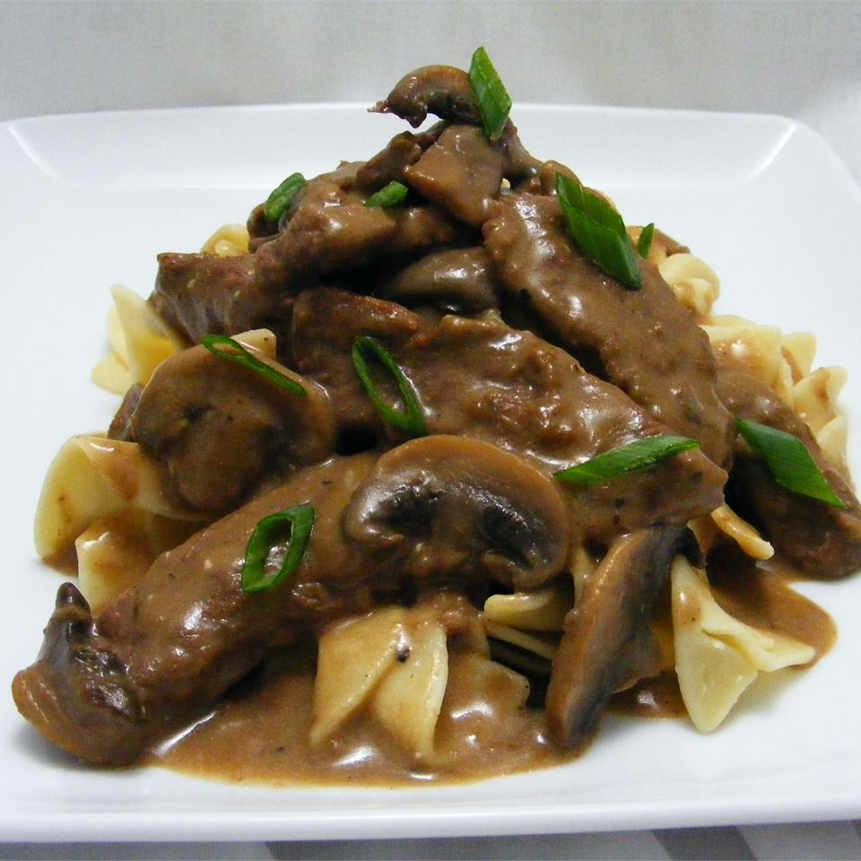

Home
Beef Stroganoff

Description
I have been making this recipe for over 20 years. This can be served over either rice or noodles. A little work but worth the effort.
Ingredients
- 2 pounds beef chuck roast
- ½ teaspoon salt
- ½ teaspoon ground black pepper
- 4 ounces butter
- 4 green onions, sliced (white parts only)
- 4 tablespoons all-purpose flour
- 1 (10.5 ounce) can condensed beef broth
- 1 teaspoon prepared mustard
- 1 (6 ounce) can sliced mushrooms, drained
- ⅓ cup sour cream
- ⅓ cup white wine
- salt to taste
- ground black pepper to taste
Steps
- Remove any fat and gristle from the roast and cut into strips 1/2 inch thick by 2 inches long. Season with 1/2 teaspoon of both salt and pepper.
- In a large skillet over medium heat, melt the butter and brown the beef strips quickly, then push the beef strips off to one side. Add the onions and cook slowly for 3 to 5 minutes, then push to the side with the beef strips.
- Stir the flour into the juices on the empty side of the pan. Pour in beef broth and bring to a boil, stirring constantly. Lower the heat and stir in mustard. Cover and simmer for 1 hour or until the meat is tender.
- Five minutes before serving, stir in the mushrooms, sour cream, and white wine. Heat briefly then salt and pepper to taste.
Home